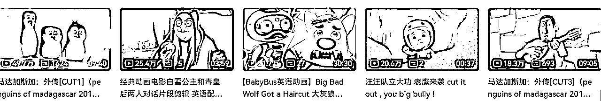

来源：https://ivqd5pmg5of.feishu.cn/docx/RLzQdx7Tsol0H1x7S4YcYrW6nce
大家可能想知道，为什么要做B站？
因为B站有下面几个特点：
1、秒收录。
2、排名那叫一个高。
3、不怎么排斥引流动作。
4、对于搬运来说，并不是太苛刻。
5、推流方式相当于：抖音+百度+论坛。
因此，选择B站，只要你有内容，那么流量可以长期吃，吃到你吃腻为止。
接下来，咱们来说一下B站的养号方式：
首先，B站不是咱爸开的，所以，别想着刚注册就上去怼广告，那是找骂，现在的平台不是10年前那些靠人工来审核的平台了，直接机器就可以把我们pass了。
那么机器是如何判断出来你养号了没有？
很简单，看下面这个公式： 登录总时长、浏览视频总时长、行为动作次数、互动次数...
综合来考核，你这个账号是不是人为在操作，如果不是的话，那你无论发任何内容， 都容易被pass掉。
创作激励跟你视频的播放量是成正比的。假设一段2分钟的原创视频，有10万个播放量，那么创作激励可能有50-100元。每周的“爆款挑战”奖励金也有50-100元的收入，这些都是实实在在的收益，不需要带货，不需要任何复杂步骤。有点类似于微信公众号的流量主，但是收入比流量主高多了。那么问题来了，该如何创作视频呢？怎么样才能实现超高曝光量呢？
这一切的宗旨都是：傻瓜式剪辑，调动的技术、消耗的时间越短越好。
➡飞瓜数据-B站大数据分析平台，提供B站UP主查找、排行榜、视频、直播、带货、品牌分析等功能服务，用数据助力内容运营、广告投放和品牌营销。
这类账号的特点就是，视频时长非常短，一般控制在3分钟之内，文案来源一般都是知乎上的高赞回答，或者自己积累的金句合集。最重要的是，制作成本一定要低，背景就是一张黑色的图片，然后把文字复制过去，利用剪映的“朗读”功能，直接把音频压制进去即可。整个剪辑过程耗时可能只有10分钟，但是视频的播放量一旦突破50万，那么创作激励的收益就有200-500元。有人问，想要实现几十万的播放量，是不是需要很多粉丝才行啊？我的回答是，不需要。即使你只有100个粉丝，只要视频做得吸引人，照样会获得系统推荐。
getyarn网站，可查看台词的出处，并且可以直接下载：
YARN | Search clips by quote
以下两个网站可以查看台词的出处，但无法下载视频。
找台词
QuoDB | The movie quotes databas
此外，如果是非常经典的台词，也可以在百度直接搜索，有时候也能查到出处。
上面提到的B站案例，是“利用极短时间、极低制作成本、撬动极高曝光量、赚取极高收益”的一个典型。
我们来看一个案例：
这类视频的制作要领是：内容必须扎心，标题必须引起广大网友的强烈共鸣，压制成本必须极低（只用剪映的最基础功能，坚决不用Pr这种复杂软件）。说白了，当你看一部老电视剧（比如康熙微服私访、铁齿铜牙纪晓岚、茶馆之类的），碰到能让你拍案叫绝、让你唏嘘不已、借古讽今的片段，你就把它截取出来。
然后配上一段背景音乐，再加上几处点评、字幕，这就可以算原创了。只要内容足够吸引人，即使你只有100个粉丝，那么视频实现10万+曝光量，一点都不难，这就是50-100元的收益。重点是，投入时间绝对不要超过1小时，如果你制作一段3分钟的视频，耗时好几个小时，那你的方向就走错了。
目前为止，专门针对中国电视剧台词搜索的网站还没有，大多都是英文台词搜索网站附带着有一些中文电视剧台词资源，但数量很少。
可以先用这个（33台词 - 电影台词搜索引擎）搜搜看，没有的话，只能采取Plan B了。
➡Plan B：
1)把自己喜欢或常用的中文电影素材下载到本地；
2)把电影导入到剪映，使用自动识别字幕功能识别字幕；
3)识别完成后，仅导出字幕为srt格式。这样我们就拥有了这个电影的中文字幕文件。
4)用记事本打开这个字幕文件，复制所有内容到excel中，粘贴。
5)其他电视剧和电影也重复这个操作，就可以的到很多影视资源的srt中文字幕文件了。同样都复制到同一个excel文件中。
6)需要查什么台词就直接打开那个excel，然后Ctrl+F搜索即可。

国外动画片的好处是，版权比较宽松（尤其是老动画），而且内容非常吸引人，所以剪辑成本就更低了。有时候都不需要加背景音乐，不需要任何剪辑的痕迹，只要把两段内容拼凑在一起，就可以通过原创审核，获得可观的创作激励收益。
总结一下，如果你想从B站通过创作激励和爆款奖金赚取收益，不推荐大家有“深耕”思维，而是要有“薅羊毛”思维。不过咱不认为“剪辑时间短”跟“内容垃圾”有什么相关性，我相信广大网友的品味。播放量高的作品，一定是深受大家喜爱的作品。
想要更快速地制作完一段视频，然后赚取B站创作激励的收益，还有更多玩法。
比如，我就知道有很多UP主，直接从油管、ins、抖音、快手、视频号上搬运热门视频，然后直接发到B站，标上原创。
在其他平台能火的视频，在B站也能火。播放量如果能突破10万，那就是50-200元的创作激励收入。有没有风险？搬运100期，有两三期被投诉，也无所谓的。当然，还有更加稳妥一点的方法是，可以把两三段视频合到一起，但是内容风格最好一致。
举个简单例子，“驴子跟狼搏斗”的视频，在各种平台都很火，你去搬两三段，合到一起，发布到B站，名字就叫《狼的克星竟然是驴子》。然后标上原创，去薅创作激励的羊毛，不香吗？比你吭哧吭哧自己录制、剪辑视频轻松多了。而且纯原创的内容，未经过市场的验证，上热门的概率极低，还不如搬运。
另外，你的长期风格最好是一致的，要么全是动物视频，要么全是老外奇葩视频，要么全是搞笑视频，总之得给大家一个关注你的理由。从平台的角度来看，B站肯定希望大家多多上传视频，如果没人投诉的话，他们根本不在乎你是不是滥标原创，他们就希望有热度。
有热度他们才有钱赚，股价才会涨，才能拉到投资。B站绝对不想打击up主的创作热情，被下架也是他们没办法，不得已而为之。所以，如果想走快速变现的路，大家一定要放开点。
B站“工房”是2022年3月推出的原创作品交易平台，站内UP主可以通过工房展示、发布原创作品信息，用户可以通过工房浏览、购买UP主的原创作品。
举个例子：
任何一个项目想要赚钱，都离不开需求，有需求才有钱赚，有需求产品才卖得出去，有需求才有人买单。
反之，如果没有需求，你的产品再好，也没人为你买单。
当然，除了需求，还有两个字也非常重要，那就是“创新”。这个时代不缺人才，但缺创新的人才（怎么感觉我在夸我自己，哈哈哈）。
其实你会发现，无论是产品还是内容，雷同的太多了，不是模仿就是抄袭，大家只能去拼流量，谁会搞流量谁就能赚钱，甚至很多人不惜靠骗也要把流量骗到手。
但在2024年的今天，一切都变了，不再和之前一样，不再需要你和之前一样去各种引流，而是你只要有好的产品，能创新，且用户有需求，你就能赚钱。因为现在任何一个平台都给你提供了商业闭环。
比如微信有微信小店、抖音有抖店、bilibili有工房、小红书有薯店……你不在需要和之前一样把流量引流到私域才能成交，而是在任何一个平台做内容，都可以实现商业闭环。
我做的飞书文档陆陆续续在出单， 累计变现1w+啦。算是走的垂直小流量。从B站工房下单，发货文件里面只留微信号，引流到微信发文档。现在微信直接有⼀部分付费客户了，有B站客户转介绍的，也有小红书通过欧美短剧引流过来的。
每更新10期新内容，就涨价一次。不到50期开始上架的，原始价99，50期的时候涨到129，现在70期是189，预计最后涨价至599。B站有粉丝优惠，而且B站工房交易没有手续费。不过因 为B站的视频播放量有6w了，所以还在B站更新比较多。
飞书文档包括：原视频、译前准备资料、转写的原文和注释笔记。本来平时就要找素材练习，所以整理笔记也是顺手的事儿。
在我看来，它是一个可以贩卖电子资料和线上服务却不用担心被限流或者封号的平台。
哔哩哔哩工房(下称工房)是由哔哩哔哩推出的原创作品交易平台，UP主可以透过工房发布、展示、浏览及售卖自己的原创作品。而且没有手续费！
作品获得高热的情况下，UP主顺势在评论区附上跳转工房链接，指引用户前往浏览购买，内容带动个人产品变现。
我是从哪里知道这个的呢？机缘巧合下，看到了B站视频下面的一条官方评论。我相信缘分和机会，相信所有出现在我生命里的瞬间都承载着一定的意义，所以我会抓住每一个机会。我抓住的过程就是整理素材，立刻我的工房里上线了资料服务。
从B站的用户，付费接一对一咨询和成交其他产品，领域包括考研、英语和求职，目前已经变现1W+。
现阶段B站最好是的推广引流方式还是是做内容输出，也就是视频和文章内容这两层面，通过内容来吸引住粉丝眼球，顺便光明正大的引个流，那么究竟有多光明正大呢？
可以在发货文件中，添加自己的微信号。比如，我的发货文档就是这么写的↓
这样用户下单后，就可以加到我们微信了，进行后续的引流变现。
（如下图：个人简介里的联系方式）
这样不仅仅可以带动互动，让作品火起来，而且还能非常精准的找到目标流量。
不过这条尽量少用，比较伤号。
B站个人主页右上方有个“动态”，点开以后，发布一个你的二维码，然后复制这个动态的链接，最后粘贴在自己的作品评论区，然后置顶。
可以口述出你的私域添加方式。
别人关注你以后，可以自动发消息给对方， 消息设置成你的钩子就可以了，那么如何设置呢？
1）、开启手机哔哩哔哩，在“我的”页面选择【创作首页】。
2）、选择【更多功能】，点击【创作设置】。
3）、找到【自动回复设置】，输入需要回复的内容，然后点击保存即可。
（4）、咱们也可以点击首页右上角信封图标，找到消息中心，点击右上角三点， 选择自动回复，开启收到消息回复并设置回复内容。
会打字就会评论哈哈。不过需要注意的是：
首先，每条评论不要都一样，
其次，最好找那些博主最后一条视频大于1个月之前的，而且底下有广告的，这样最起码博主不会及时删评，可以让你的引流内容保鲜很长一段时间。
以上就是多数的分享，希望可以给小伙伴们带来一点收获~
最后，想要深入了解B站创作和变现的圈友，我自己还整理了一份《B站百问百答》，欢迎大家一起交流！
（点击上方蓝字即可跳转）